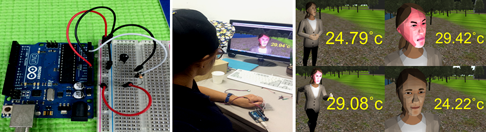
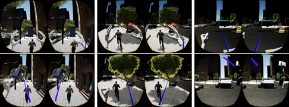
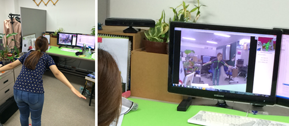

research topics
Game Character Affected by Player's Body Temperature and Heart Rate In Horror Game
본 연구에서는 플레이어의 체온과 심박을 실시간으로 측정하여 플레이어와 아바타의 일체감을 제공하는 게임 구현 방법을 제시한다. 플레이어의 실제 체온과 심박을 게임 공간에 반영함으로써 게임에 대한 몰입감과 동일화를 부여한다. 측정된 체온과 맥박에 따라 게임 캐릭터의 감정 상태를 변화시키고 상태에 따라 다른 얼굴 표정 및 신체 활동을 표출하도록 하였다. 실제로 지하철 공간에서의 공포 게임을 구현하고 심박 및 온도 센서 수집 하드웨어를 제작하여 제안한 방법을 적용시켜보았다. 게임 플레이어의 공포정도에 따라 체온 변화가 일어나고 게임 캐릭터가 체온 변화에 어울리게 동작하여 공포감 정도를 실제와 유사하게 구현하였음을 확인할 수 있었다.

Manipulation of Long Distance Virtual Objects Using Leap Motion and Its Game Application
Leap Motion is a virtual reality controller which allows users to interact with the virtual objects using their bare hands. However, the controller only allows the detection of hands up to 60cm from the sensor, which means that users cannot interact with virtual objects outside the same range in the virtual space. We propose a new interaction method to overcome the limitation of the manipulation range. The movement of virtual hands in the virtual space is accelerated by the velocity of the hand movement and the range of the reachable virtual space is expended to the current view of the virtual space. Experimental results show that users can manipulate long-distance objects in a coherent and convenient way.

Animation Control of Game Character Using Motion Capture Data
모션 데이터를 이용하여 현실 세계의 행동을 게임 세계의 캐릭터에게 전달하는 게임 캐릭터 애니메이션 제어 기법을 제안한다. 키넥트 장치를 사용하여 신체의 모션 데이터를 캡쳐하여 파일로 저장한다. 저장된 데이터는 캐릭터 정보에 맞게 변환되어 FBX 파일 형식의 캐릭터에 적용된다. 동화상을 일정 프레임만큼 녹화하여 따로 저장하므로 원하는 프레임에 접근하여 캐릭터를 제어하는 것이 가능하다. 이는 자연스러움이 많이 요구되는 캐릭터 애니메이션에 프레임 별로 접근함으로써 컨텐츠의 수작업 없이 세밀한 관찰 및 수정이 가능하다. 제안한 방법은 간편하게 실제 신체의 모션 데이터를 게임 캐릭터에 적용할 수 있는 장점이 있다.

Entertainment Computing Laboratory